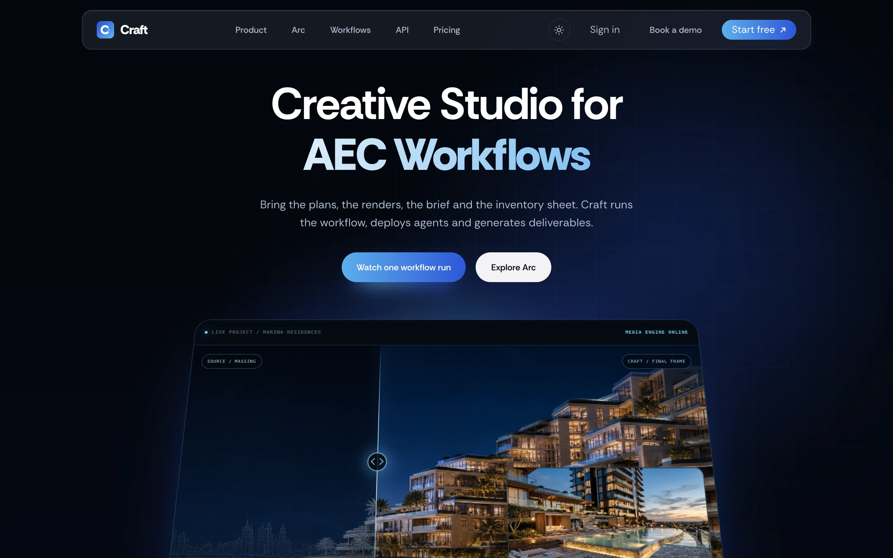
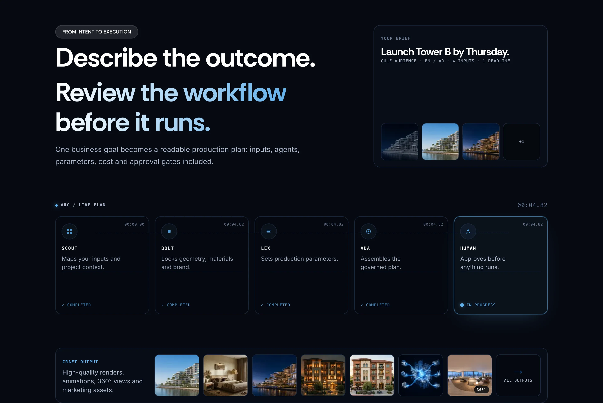
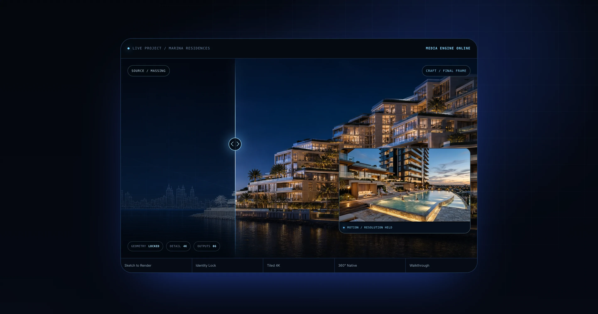
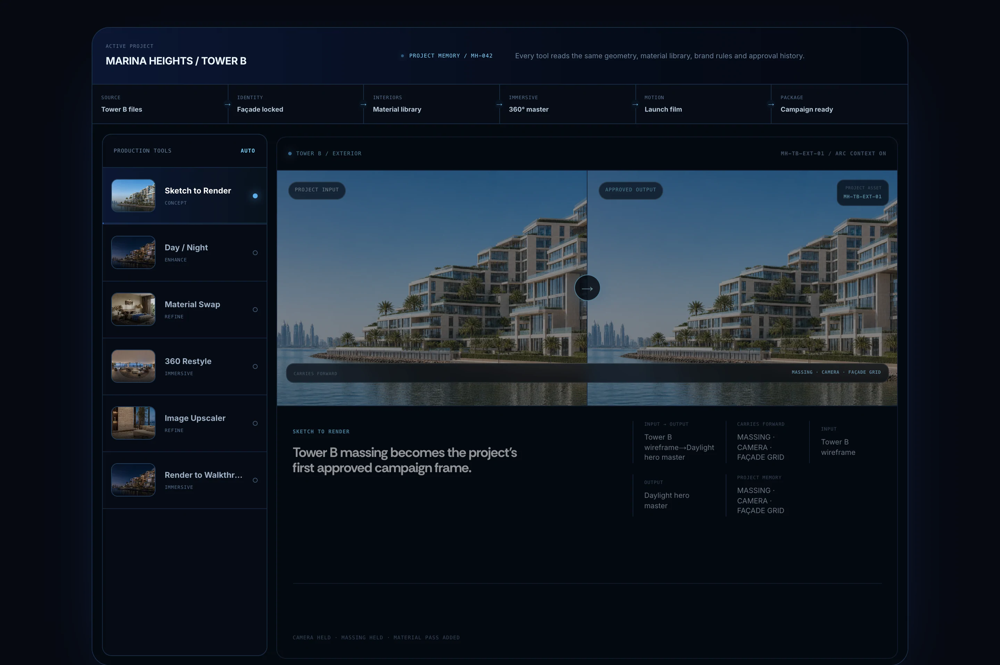
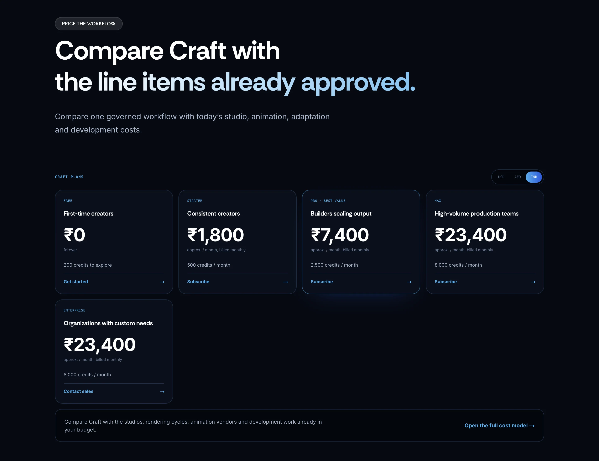
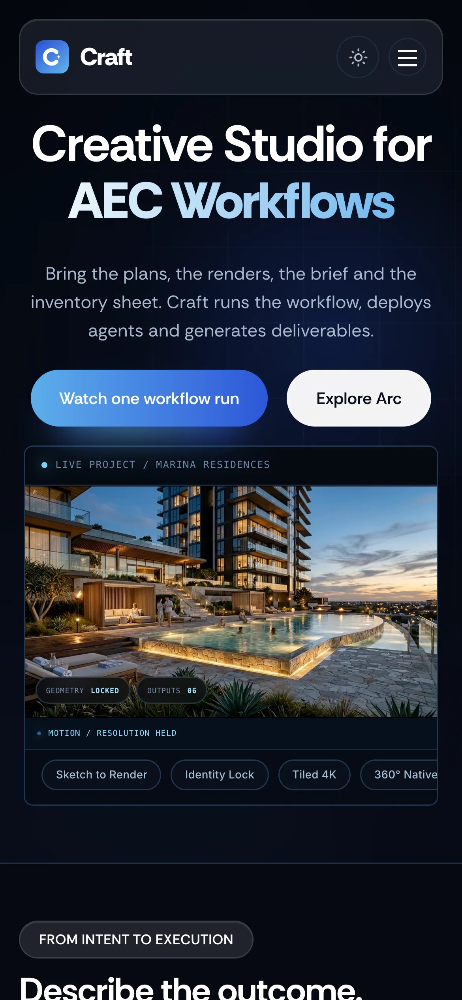
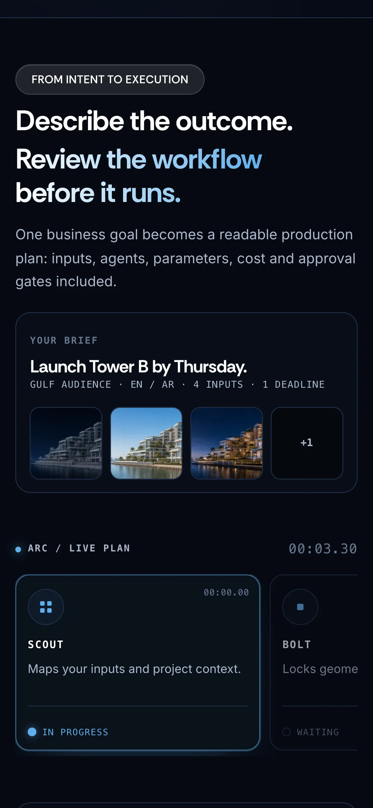
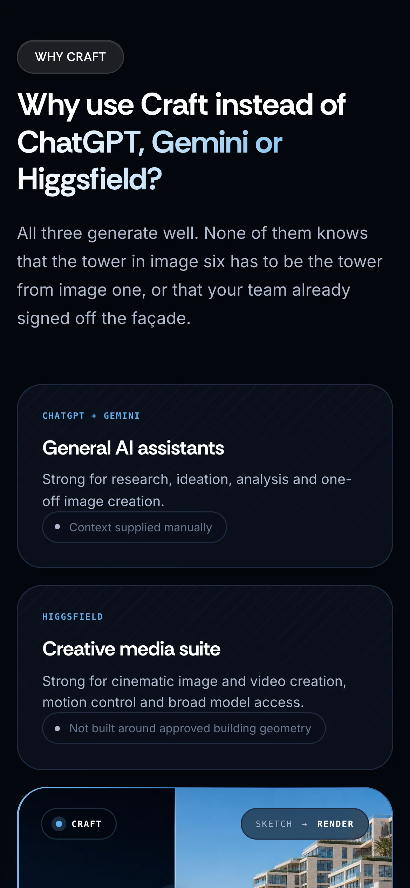
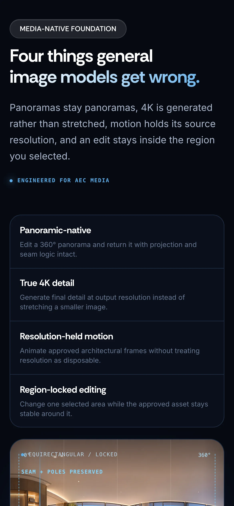

Craft Live website · PropVR
Designing and building the website for an AI studio for architects
- Introduction
Craft is PropVR's creative studio for architecture, engineering and construction (AEC) teams. You give it a project and a goal, and it plans and runs the renders, panoramas, videos and edits you need.
I designed and built its website. There was no design hand-off: I worked straight in code with Claude and Cursor, with Figma for the pieces that needed it. I also worked on the UX of the dashboard, which isn't shown here.
- My role
- UX Designer
- Tools
- Claude, Cursor, Figma
- Company
- PropVR
- Live site
- craft.propvr.ai (opens in a new tab)

Context A product that worked, and a story that didn't come through yet
Craft already worked. It could make renders, panoramas and videos, edit one region of an image, and run agents that plan the work. The website had to explain all of that to architects, developers and marketing teams, many of whom already use tools like ChatGPT or Gemini for some of it.
Craft needed a website that could do the explaining on its own, for teams who had never seen a demo. Its job was to get an AEC team from "what is this?" to trying one real project, without a sales call in between.
The problem Listed one by one, it looked like a toolbox
1. Too many features, no thread
Renders, panoramas, video, region edits, agents. Each one is useful, but a page that lists them reads like a toolbox, and a toolbox is easy to compare against free tools feature by feature.
2. Visitors already had AI tools
Most people landing on the page will have tried a general AI tool already. The site had to say plainly why this is different, instead of hoping they'd work it out.
3. Different teams, different reasons
An architect, a developer and a marketer care about different things. One generic message would land with none of them.
So the idea became: sell the workflow, not the toolbox. You describe an outcome, Craft plans it, and the pieces run in order.
How I built it Designing in the browser, with AI doing the typing
Instead of finishing the design in Figma and handing it over, I built the site directly with Claude and Cursor. That made it cheap to try a new layout or a different section order and see it live in a few minutes.
What it didn't do was decide anything for me. Which version was right, what came first, and what to cut were still my calls, and I made a lot of them.
Generate, read, decide, repeat
My loop was simple: build a version, read it top to bottom the way a visitor would, then decide by hand what to change, whether that was the order, a heading, or a section that didn't earn its place. The page went through many rounds like this before it felt right.
One section, up close How a single section explains itself
This is the section that carries the whole idea, so here's how it's put together.

- The heading is the sequence
“Describe the outcome. Review the workflow before it runs.” Two sentences, two steps: the section explains itself before the visuals do.
- The brief, as an object
The goal sits in its own card with its inputs and a deadline, so it reads as something you hand over, not a prompt you type.
- The plan, left to right
Each agent is a card with its task and status, in order, so the plan reads as a sequence rather than a feature list.
The website The homepage, top to bottom
I ordered the page the way I'd explain Craft to someone in person: show what it makes, show how it works, say why it's different, show what it means for your team, then prove it and ask.
Show the result first
Before any explanation, a before-and-after render. An architect sees a massing model turn into a finished image and understands what Craft does in a second.

Then show how it works
The features become steps: a goal turns into a plan with inputs, agents, cost and approvals, and then one real project moves through the tools in order.

Name the alternatives
Visitors were going to compare it to ChatGPT or Gemini anyway, so the page does it for them, then shows what's different: agents that share one project, the tools it's coming to, and four things AEC work needs that general models get wrong.
Speak to each team
Only once the workflow is clear does the page split by team: what architects, developers, marketers and sales each get from the same project.
Prove it, then ask
Pricing set against costs a team already pays for, proof from PropVR's own production work, the questions teams ask before switching, and one small ask at the end: run one real project through it.

On a phone The same story on a small screen
The order stays the same on a phone. Side-by-side comparisons stack, and the cards become a single column you scroll through.




Learnings What I'd take into the next one
AI makes the building fast, not the deciding
Trying a new layout took minutes. Choosing between them, and knowing what to cut, took as long as it always does.
Order is half the message
Getting the order right (show it, explain it, compare it, then ask) did more for this page than any single section.
Code is a great place to design, if you stay the designer
Working straight in the browser meant I saw real spacing, real type and real motion from the start. The trick was not letting the speed decide for me.